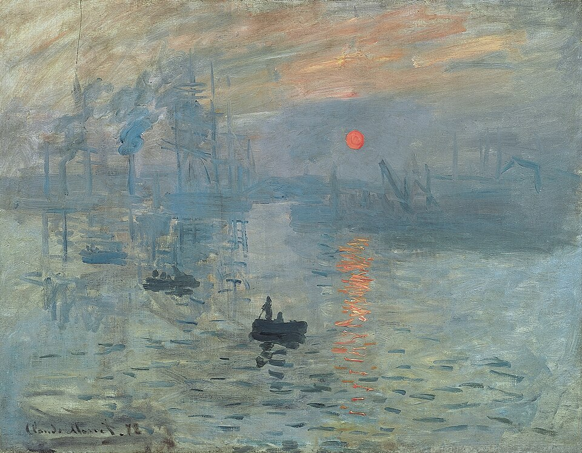

Claude Monet — 1872
Impression, Sunrise is the painting that lent its name to Impressionism. Monet captured shifting light and atmosphere with loose brushwork, favoring perception of a moment rather than photographic detail.
Movement & influence: This 1872 work helped coin the term "Impressionism" and encouraged plein-air painting, rapid brushwork, and a focus on light's transient effects.
Page accents use soft, luminous tones to echo Monet's focus on light and atmosphere.